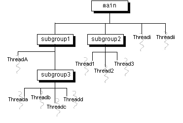

Feedback Form
| Start of Tutorial > Start of Trail > Start of Lesson | Search Feedback Form |
TheThreadGroupclass manages groups of threads for Java applications. A
ThreadGroupcan contain any number of threads. The threads in a group are generally related in some way, such as who created them, what function they perform, or when they should be started and stopped.
ThreadGroups can contain not only threads but also otherThreadGroups. The top-most thread group in a Java application is the thread group namedmain. You can create threads and thread groups in themaingroup. You can also create threads and thread groups in subgroups ofmain. The result is a root-like hierarchy of threads and thread groups:
 TheThreadGroupclass has methods that can be categorized as follows:
- Collection Management Methods--Methods that manage the collection of threads and subgroups contained in the thread group.
- Methods That Operate on the Group--These methods set or get attributes of the
ThreadGroupobject.- Methods That Operate on All Threads within a Group--This is a set of methods that perform some operation, such as start or resume, on all the threads and subgroups within the
ThreadGroup.- Access Restriction Methods--
ThreadGroupandThreadallow the security manager to restrict access to threads based on group membership.
TheThreadGroupprovides a set of methods that manage the threads and subgroups within the group and allow other objects to query theThreadGroupfor information about its contents. For example, you can callThreadGroup'sactiveCountmethod to find out the number of active threads currently in the group. TheactiveCountmethod is often used with theenumeratemethod to get an array filled with references to all the active threads in aThreadGroup. For example, thelistCurrentThreadsmethod in the following example fills an array with all of the active threads in the current thread group and prints their names:public class EnumerateTest { public void listCurrentThreads() { ThreadGroup currentGroup = Thread.currentThread().getThreadGroup(); int numThreads = currentGroup.activeCount(); Thread[] listOfThreads = new Thread[numThreads]; currentGroup.enumerate(listOfThreads); for (int i = 0; i < numThreads; i++) System.out.println("Thread #" + i + " = " + listOfThreads[i].getName()); } }Other collection management methods provided by the
ThreadGroupclass includeactiveGroupCountandlist.
TheThreadGroupclass supports several attributes that are set and retrieved from the group as a whole. These attributes include the maximum priority that any thread within the group can have, whether the group is a "daemon" group, the name of the group, and the parent of the group.The methods that get and set
ThreadGroupattributes operate at the group level. They inspect or change the attribute on theThreadGroupobject, but do not affect any of the threads within the group. The following is a list ofThreadGroupmethods that operate at the group level:For example, when you use
getMaxPriorityandsetMaxPrioritygetDaemonandsetDaemongetNamegetParentandparentOftoStringsetMaxPriorityto change a group's maximum priority, you are only changing the attribute on the group object; you are not changing the priority of any of the threads within the group. Consider the following program that creates a group and a thread within that group:When thepublic class MaxPriorityTest { public static void main(String[] args) { ThreadGroup groupNORM = new ThreadGroup( "A group with normal priority"); Thread priorityMAX = new Thread(groupNORM, "A thread with maximum priority"); // set Thread's priority to max (10) priorityMAX.setPriority(Thread.MAX_PRIORITY); // set ThreadGroup's max priority to normal (5) groupNORM.setMaxPriority(Thread.NORM_PRIORITY); System.out.println("Group's maximum priority = " + groupNORM.getMaxPriority()); System.out.println("Thread's priority = " + priorityMAX.getPriority()); } }ThreadGroupgroupNORMis created, it inherits its maximum priority attribute from its parent thread group. In this case, the parent group priority is the maximum (MAX_PRIORITY) allowed by the Java runtime system. Next the program sets the priority of thepriorityMAXthread to the maximum allowed by the Java runtime system. Then the program lowers the group's maximum to the normal priority (NORM_PRIORITY). ThesetMaxPrioritymethod does not affect the priority of thepriorityMAXthread, so that at this point, thepriorityMAXthread has a priority of 10, which is greater than the maximum priority of its group,groupNORM. This is the output from the program:As you can see a thread can have a higher priority than the maximum allowed by its group as long as the thread's priority is set before the group's maximum priority is lowered. A thread group's maximum priority is used to limit a thread's priority when the thread is first created within a group or when you useGroup's maximum priority = 5 Thread's priority = 10setPriorityto change the thread's priority. Note thatsetMaxPrioritydoes change the maximum priority of all of its descendant-threadgroups.Similarly, a group's daemon status applies only to the group. Changing a group's daemon status does not affect the daemon status of any of the threads in the group. Furthermore, a group's daemon status does not in any way imply the daemon status of its threads--you can put any thread within a daemon thread group. The daemon status of a thread group simply indicates that the group will be destroyed when all of its threads have been terminated.
TheThreadGroupclass has three methods that allow you to modify the current state of all the threads within that group:These methods apply the appropriate state change to every thread in the thread group and its subgroups.
resumestopsuspend
TheThreadGroupclass itself does not impose any access restrictions, such as allowing threads from one group to inspect or modify threads in a different group. Rather theThreadandThreadGroupclasses cooperate with security managers (subclasses of theSecurityManagerThe
ThreadandThreadGroupclass both have a method,checkAccess, which calls the current security manager'scheckAccessmethod. The security manager decides whether to allow the access based on the group membership of the threads involved. If access is not allowed, thecheckAccessmethod throws aSecurityException. Otherwise,checkAccesssimply returns.The following is a list of
ThreadGroupmethods that callThreadGroup'scheckAccessbefore performing the action of the method. These are what are known as regulated accesses, that is, accesses that must be approved by the security manager before they can be completed.This is a list of the methods in the Thread class that call
ThreadGroup(ThreadGroup parent, String name)setDaemon(boolean isDaemon)setMaxPriority(int maxPriority)stopsuspendresumedestroycheckAccessbefore proceeding:A stand-alone Java application does not have a security manager by default; no restrictions are imposed and any thread can inspect or modify any other thread, regardless of the group they are in. You can define and implement your own access restrictions for thread groups by subclassing
- constructors that specify a thread group
stopsuspendresumesetPriority(int priority)setName(String name)setDaemon(boolean isDaemon)SecurityManager, overriding the appropriate methods, and installing theSecurityManageras the current security manager in your application. For information about implementing a security manager, see the lesson Providing Your Own Security Manager.
The HotJava Web browser is an example of an application that implements its own security manager. HotJava needs to ensure that applets are well-behaved and don't do nasty things to other applets running at the same time (such as lowering the priority of another applet's threads). HotJava's security manager does not allow threads in different groups to modify one another. Please note that access restrictions based on thread groups may vary from browser to browser and thus applets may behave differently in different browsers. For more information about access restrictions on thread groups within applets, see Security Restrictions
| Start of Tutorial > Start of Trail > Start of Lesson | Search Feedback Form |